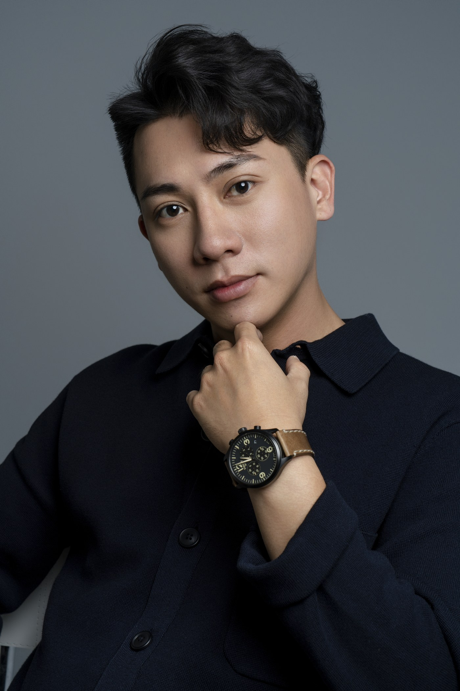

精緻，現在是一件便宜的事。
正式的西裝、棚燈的光、平整的膚質、剛好的場景，過去要一組人才做得出來，現在幾分鐘就有。
這不代表專業影像失去價值。真正改變的是：光靠「看起來很專業」，已經不足以說明你是誰、能承擔什麼、值不值得託付。
於是要問的問題換了一個：這張照片，和真正走進會議室的那個人，對得起來嗎？
一張照片，已經不能單獨證明一個人
照片在商業裡的功能從來不是美學，是訊號。它替看的人回答一個很快的問題：這個人是誰，可不可信。
而訊號要有效，前提是它不容易取得。十年前一張高質感的形象照，間接說明了你願意在自己身上投資，因為那件事做起來不簡單。現在門檻沒了。
但要說清楚的是，精緻並沒有失效，它只是不再構成差異。而且它從來就不能證明一個人的專業能力、誠信或交付結果，只是過去沒有人需要計較這件事。
精緻曾經是一種成本訊號。它從來都不是能力證明。
現在的第一反應，常常不是欣賞，而是懷疑
以前看到一張完成度很高的照片，多數人的第一句是「拍得真好」。
現在，很多人的第一句變成了「這AI吧」。接著眼睛就開始找線索：手指的數量、耳環對不對稱、背景裡有沒有糊掉的字、皮膚是不是平得不像人。
他們不一定真的分得出來。高品質的生成影像，肉眼未必是可靠的裁判。
但重點從來不在觀者判斷得準不準，而在影像已經不再被直接接受。它先被懷疑，再被相信。
這個轉變會產生一種很少被算進去的成本：一張真的照片，現在也可能要花力氣證明自己是真的。
AI 改變的不只是影像怎麼被做出來，而是人們還願不願意直接相信它。
真實溢價，不發生在一張照片裡
如果單張照片的證明力下降，價值就會往上移一層，移到照片與照片之間。
一個人被認識的路徑其實很長：搜尋結果、官網、LinkedIn、社群、一段影片、一次視訊，最後才是真正見面。每一次接觸，都是一次對答案的機會。
真正值錢的，是這一串接觸點不需要被解釋。對方不會在中間停下來問：哪一個才是真正的你。
換個方式想，每多出一次「這是同一個人嗎」的停頓，對方就得多花一次力氣確認你。願意替你多確認幾次的人，本來就不多。
真實，不等於只有一個版本
你可以在董事會上沉穩，在課堂上有互動感，在社群裡更接近生活。這些都是你。
需要一致的不是每張照片都長一樣，而是每一個版本都由同一個人承接得住，彼此之間也不互相打架。
真實也不等於隨手拍。隨拍的照片一樣真實，但它同時說了另一件事：這個位置我沒有很在意。溢價屬於的是被好好呈現的真實。
AI 不是問題，斷裂才是
AI 有它合理的位置：概念草稿、服裝與背景的測試、創意視覺、不承接商業信任的場景。這些都不需要迴避。
真正會出事的是斷裂：把生成的畫面當成現場的紀錄，或者照片替你承諾了一個本人扛不起來的角色。前者是誤導，後者是遲早要還的。
這也是我們把三件事放在同一條線上的原因。定位（À Voir）確保照片裡是對的角色；妝髮（B.room）做的是更好的真實，不是一張面具；影像（C.photos）留下的是見面時仍然認得出來的那個人。三者合起來要解的，不是「拍得像不像真的」，是每一個接觸點都不必重新解釋一次。
如果你還在判斷什麼時候可以用 AI、什麼時候該拍真的，AI 形象照能用嗎那篇談的是實際的使用情境，這一篇談的是它改變了什麼。

下一次有人真的見到你之前
他會先看到搜尋結果，看到照片，可能還看過一段影片，然後才是你本人。
那幾個接觸點之間，還是同一個人、同一個角色、同一套承諾嗎？
AI 時代真正值錢的，未必是一張毫無瑕疵的畫面。而是你不必在每一次接觸裡，重新證明一次自己。